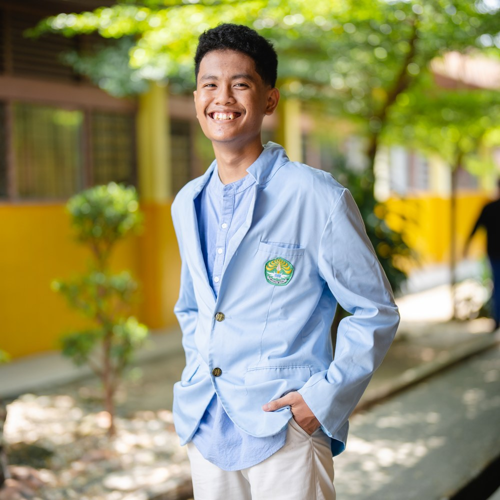
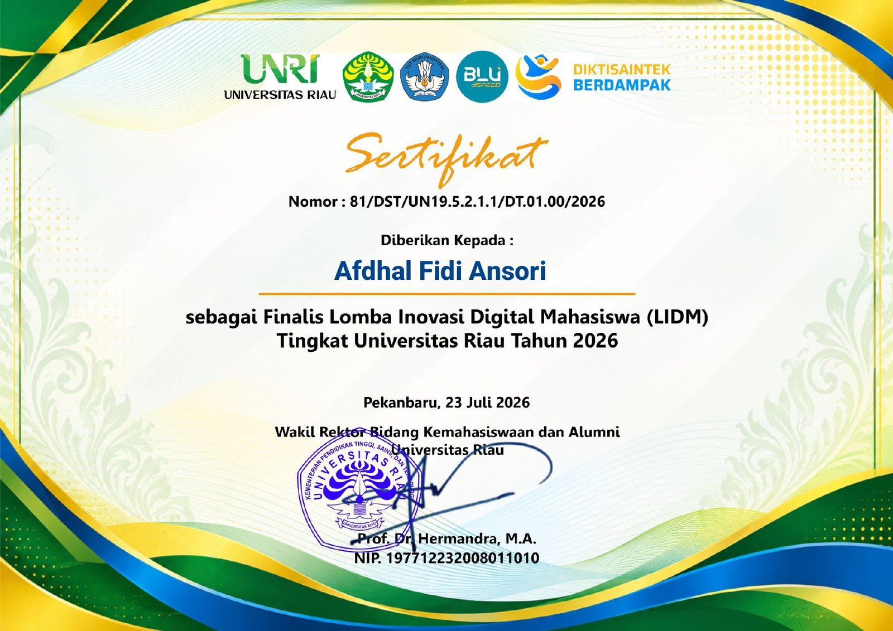
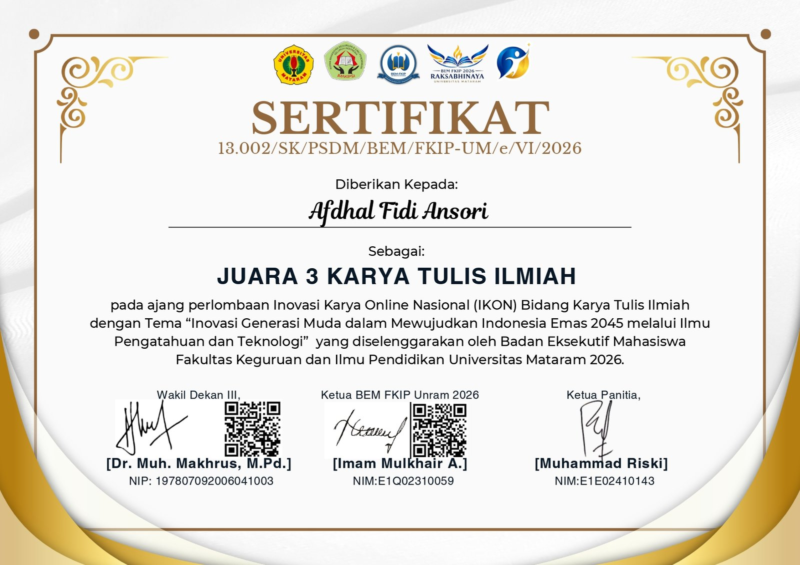
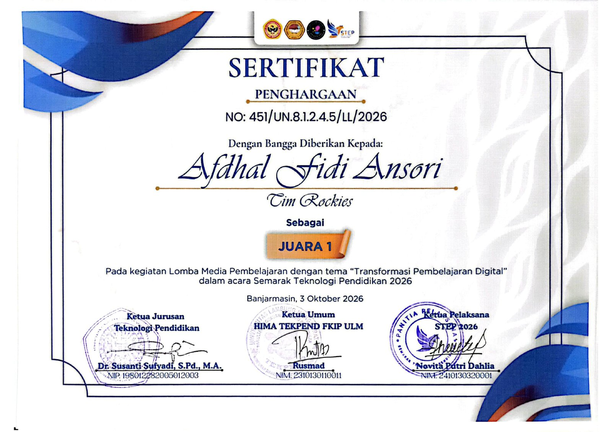

Atlas karya / 2026 Pekanbaru, Riau
Afdhal Fidi Ansori
Saya membangun media belajar interaktif — LKPD, game edukasi, dan aplikasi web — lalu memastikan produknya benar-benar dipakai.

Belajar dengan membuat.
Saya Afdhal Fidi Ansori, mahasiswa Teknik Informatika di Universitas Riau. Saya mengerjakan web, basis data, dan antarmuka — biasanya untuk membuat materi yang sulit terasa lebih bisa dimainkan.
Beberapa tahun terakhir saya banyak membuat LKPD interaktif dan game edukasi matematika. Dari situ saya belajar bahwa masalah desain dan masalah teknis sering kali adalah masalah yang sama: terlalu banyak hal yang harus dipahami sekaligus.
“Saya lebih peduli pada apakah orang benar-benar memakai yang saya buat, daripada seberapa rapi kodenya terlihat.”
Sekarang saya mendalami AI — bukan untuk menggantikan proses, tetapi untuk memahami cara kerjanya dan memakainya dengan sadar. Saya suka bekerja terstruktur, terbuka pada revisi, dan menyelesaikan hal sampai bisa dipakai.
- Fokus
- Web development · Database · UI
- Sedang dipelajari
- AI & penerapannya di web
- Berbasis di
- Pekanbaru, Riau, Indonesia
Terbuka untuk kolaborasi, lomba, dan proyek yang punya tujuan jelas.
Alat yang saya pakai.
Bukan daftar lengkap — hanya yang benar-benar muncul di project, tugas, dan perlombaan.
Sedang dipelajari: AI, eksperimen kecil dengan model bahasa dan penerapannya di web.
Tiga project pilihan.
Semua projectTiga project yang saya bangun dari awal: LKPD interaktif, game edukasi, dan simulasi bisnis. Setiap project punya masalah, aturan, dan solusi teknisnya sendiri.


Sertifikat & penghargaan.
Lihat sertifikatTiga sertifikat dan penghargaan dari kompetisi yang saya ikuti. Klik kartu untuk membuka dokumennya.
LIDM
Universitas Riau Lomba Inovasi Digital Mahasiswa.
Buka dokumen Juara 3 2026LKTI IKON
Universitas Mataram Inovasi Karya Online Nasional.
Buka dokumen Juara 1 2026Media Pembelajaran
Universitas Lambung Mangkurat Semarak Teknologi Pendidikan.
Buka dokumen05 / Kirim Kabar
Punya ide,
atau sekadar menyapa?
Saya membaca setiap pesan. Untuk kolaborasi, lomba, atau pertanyaan tentang project, email adalah jalur tercepat.
- Lokasi
- Pekanbaru, Riau, Indonesia
- Waktu lokal
- — WIB